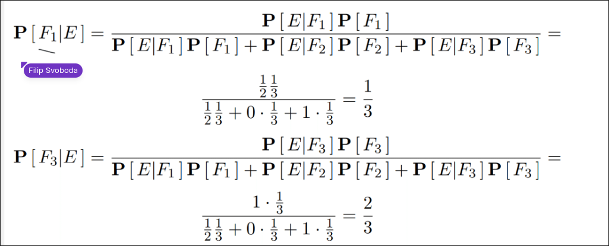

Bring your logic to Life.
A professional-grade, cross-platform digital logic circuit simulator designed for students, hobbyists, and engineers.

Designed for Engineers
Bridge the gap between theory and real-world digital design with a powerful simulation engine.
Dynamic Gate Config
Need a 4-input AND gate? Simply add extra input pins dynamically. No cascading required.
Advanced Engine
Real-time event-driven simulation. Adjust clock speeds and identify glitches with true propagation delays.
Custom ICs
Package complex circuits into reusable Black Box chips to build high-level architectures. Supports deep nesting.
Timing Analysis
Visualise signal states over time. Debug race conditions and understand the exact timing relationships in your circuit.
Auto-Layout
Messy wires? Use the intelligent Auto-Organise algorithm to instantly untangle components and route wires for maximum readability.
Custom Themes
Powerful theming engine lets you customise everything. Ships with Dracula, Nord, One Dark, and Monokai built-in.
Cross Platform
Native experiences for Windows and Linux, plus a portable JAR for macOS and other Java 17+ environments.
Ready to Build?
Start designing your circuits today. Completely free and open-source.